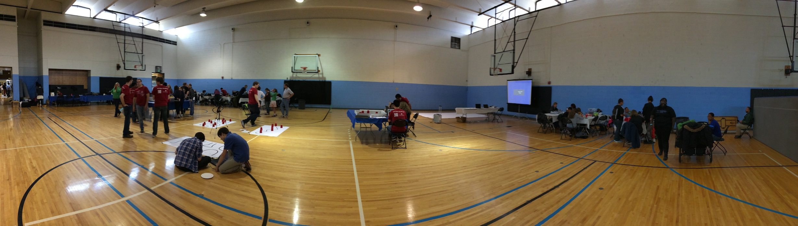
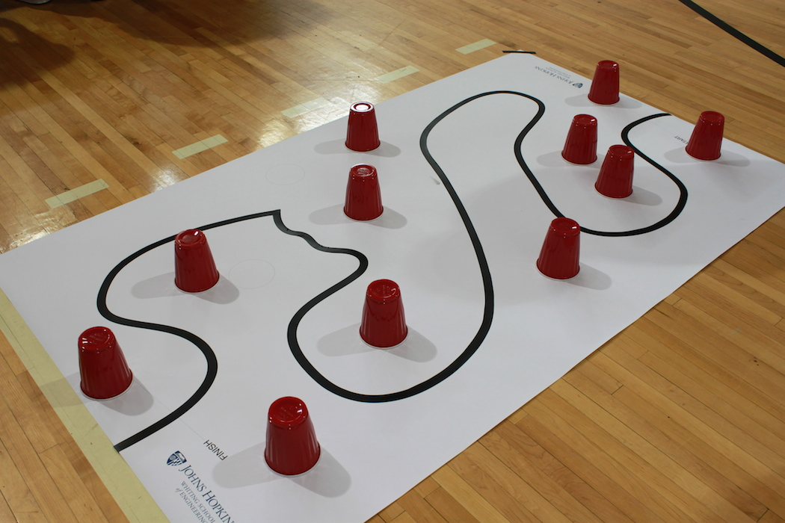
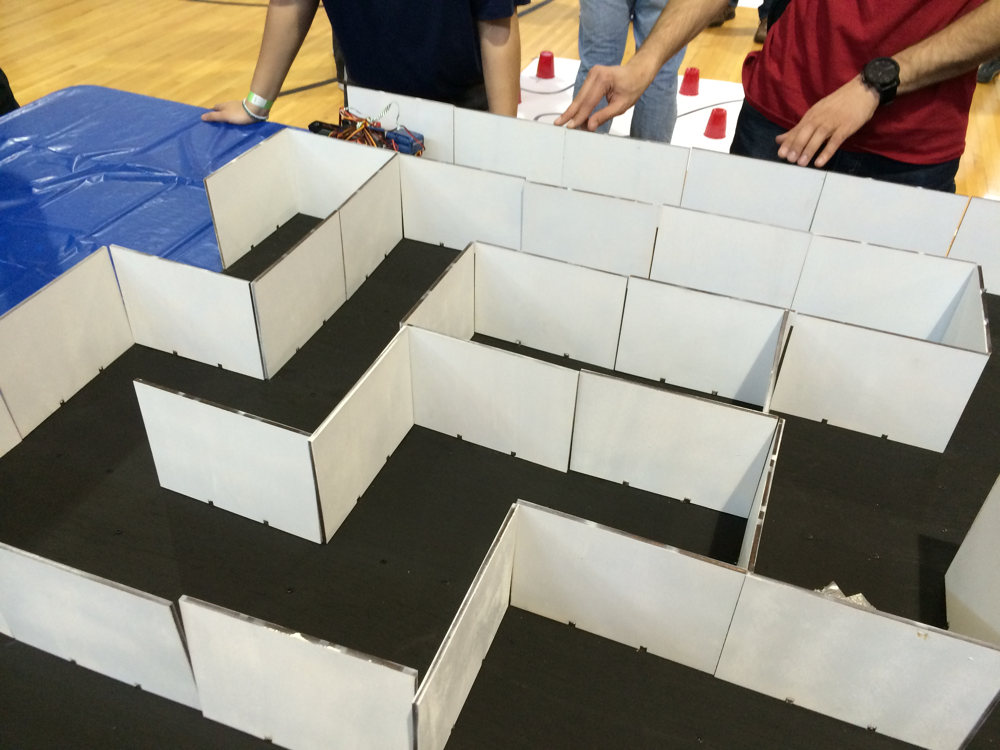
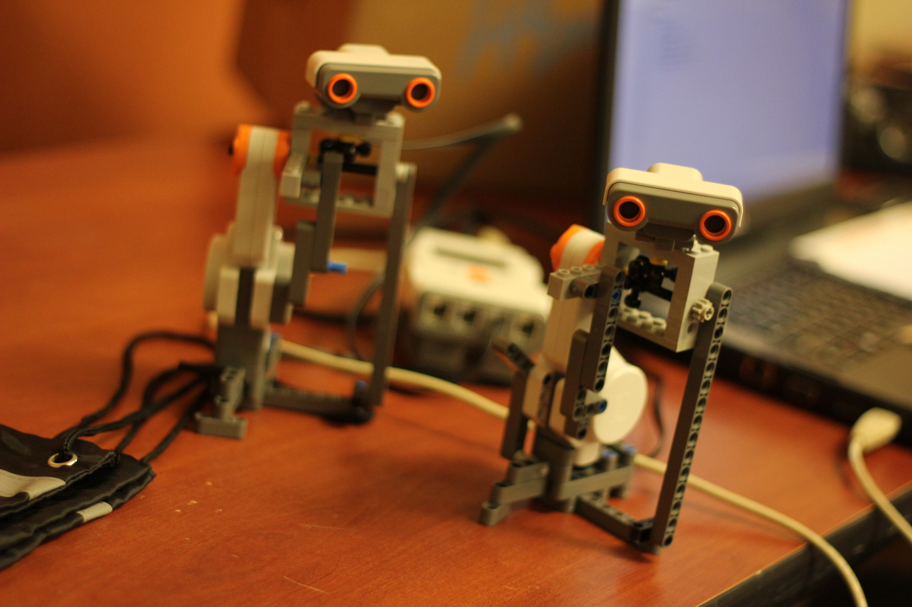
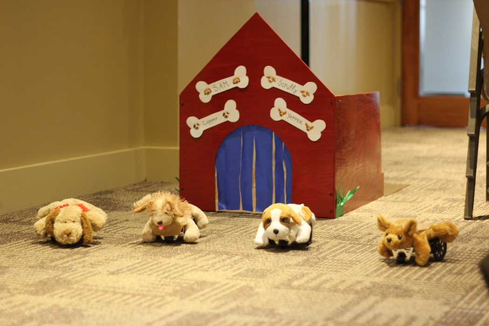

Overview
The purpose of the Johns Hopkins Robo Challenge is to complement classroom instruction by providing students with a unique opportunity to apply classroom skills and knowledge in a fun and competitive environment. The event brings students in teams to construct and program small robots that compete in several challenges.This competition is free and open to all middle and high school students.Events
|
Training Session: January 17th, 2015 (9am-5pm) Location: Hackerman B17 (Homewood campus) Register here by January 14th. Description: A group of graduate students in our robotics center will give a tutorial on how to program the BoE bots and Arduino bots that are commonly used for the competition. There will be a morning session from 9am-12:30 going over the BoE bot and an afternoon session from 1:30-5pm going over the Arduino bot. |
 |
|
Help Session: April 4 (10am-2pm) Location: Hackerman B17 (Homewood campus) Description: A group of graduate students will be available to help work through issues that teams are facing. We will have a set of practice courses setup that mimic the competition. |
JHRC Competition: May 2th, 2015 (10am-5pm)
Location: JHU Glass Pavillion (Homewood campus)
Register here by April 10th.
Location: JHU Glass Pavillion (Homewood campus)
Register here by April 10th.

Challenges
|
Challenge 1: Slithering Slalom Robots must follow a long, curvy black line on the ground. Obstacles will be placed parallel to the line, which the robot must avoid. |
 |
| Challenge 2: Mystery Maze Robots are placed in the Mystery Maze where they must autonomously navigate around corners and multi-way splits in attempts to reach the finish. |
 |
| Challenge 3: Microsurgical Search & Destroy Teams of Robotic Eye Surgeons will design and program their robots to find and remove all the “lesions” (cups on large white circles) at various unknown locations in the patient’s eye, a 4’ x 4’ enclosure. Two teams will compete simultaneously to remove the most lesions. |
 |
| Challenge 4: Unleashing the Mad Scientist Teams will design an innovative and practical application for their robot beyond the scope of the ideas in the other challenges. They will display a working model of their idea in an oral presentation along with a written report. |
 |
| Challenge 5: So You Think Your Robot Can Dance Teams will program an original dance routine for their robot(s). Choreography can include a combination of spins, repeated sequences, and other creative movements. |
 |
General Rules
- Robot programs must be written entirely by the student teams (but may receive input from mentors).
- Teams may use portions of programs that they have previously written. However, they may not use programs that other people wrote or that were obtained by online resources.
- Only robots that comply with the “Acceptable Robots” may be used for events 1-3.
- There may not be more than 3 student members (Grades 6-12) on a team.
Acceptable Robots
This year, there is a specific size limit for each robot competing in Challenges 1-3. This rule supersedes previous restrictions on which robots could be used. For the first three challenges the maximum width and length of the robot is 7.5 inches by 7.5 inches. Within reason, there is no size limit for challenges 4 and 5.
We are also removing previous restrictions on which sensors can be used. You can now use any sensor compatible with your robot kit.
Suggested robots:
- Arduino-based robot
- Sparki
- BoE-Bot
We have a set of BoE-bots that can be loaned out for free (with $150 security deposit). If you would like a kit email us at jhuRoboComp@gmail.com.
Sponsors
Thank you to the sponsors who make this event possible!- The Laboratory for Computation Sensing and Robotics
- The Johns Hopkins Alumni Association
- The Graduate Representative Organization